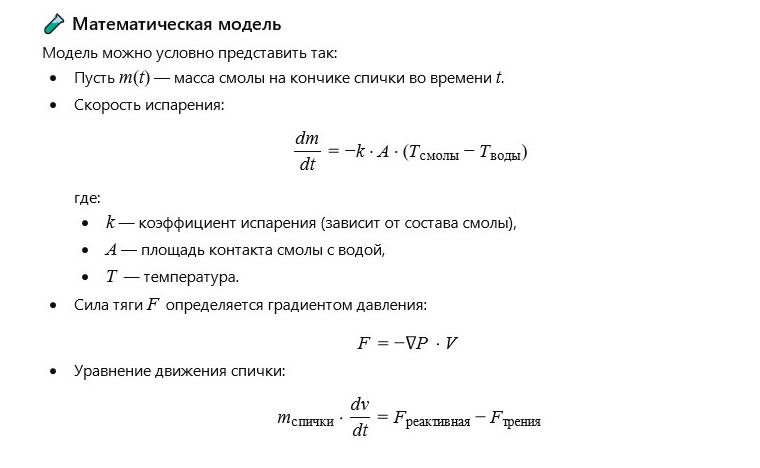

Author: Valerii
As a child in spring, I loved building little sailboats and floating them in puddles. I enjoyed watching the breeze push them across the "ocean" from one bank to another. The boats had paper sails, and the wind often tore these little sails off their masts. I decided to fix the sails with poplar resin. I took a match, squeezed a bit of resin from a bud, and coated the mast and the holes in the paper sails so that they wouldn’t slide against each other. After that, the wind left the sails alone. I safely tossed the match with resin into the water and continued observing my flotilla. I was very surprised when I noticed that the match started spinning on its own in the water. Looking closer, I saw that the resin dripping from the tip of the match into the rather cold water created a reactive jet.
As a child in spring, I loved making little sailboats and setting them afloat in puddles after rain. The wind carried them from one bank to another, turning the puddle into a miniature ocean. The sails were made of paper and attached to masts. But gusty wind often tore them off — the boats lost balance and capsized. One day, I decided to strengthen the sails using tree resin. I took a match, obtained a drop of resin from a poplar bud, and coated the masts and holes in the paper. It worked — the wind no longer knocked the sails off. I tossed the match into the puddle — and suddenly noticed it slowly but steadily spinning on the water. Upon closer inspection, I realized that the resin, dripping from the tip of the match into cold water, acted like a tiny reactive jet, pushing the match forward like a miniature engine. It was the first time I felt that even in a puddle, amazing physics could be alive.
What happens on a molecular level when resin enters cold water?
Some components of the resin (e.g., terpenes) begin to evaporate or dissolve quickly, creating an uneven distribution of molecules and a pressure gradient on the water surface.
Can this principle be used in microengineering?
Yes, based on this principle, micro-motors can be created — devices that move in liquids due to dissolution or emission of substances.
What is the role of water temperature?
The colder the water, the slower the dissolution, but the higher the contrast between hot resin and its surroundings — which can amplify the “reactive push” effect.
Can a chemical-mathematical model of the resin-cold water interaction be constructed?
Yes. This would require describing:
- The resin composition (main volatile organic compounds);
- Temperature gradient between resin and water;
- Rate of dissolution or evaporation of components;
- Surface tension and viscosity;
- Reactive force caused by uneven release of substances.
Navier–Stokes differential equations can be used to model fluid motion, including chemical parameters of resin affecting local viscosity and density near the droplet.
